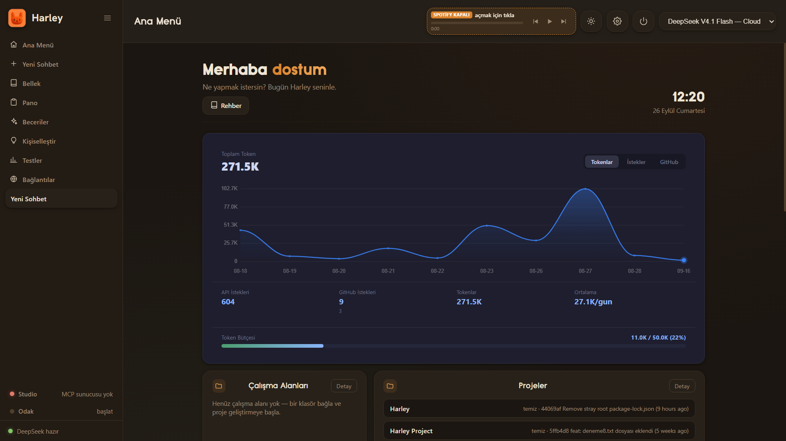

Harley sohbet eder, kod yazar, projelerini geliştirir, GitHub'a gönderir, takvimini ve e-postanı okur, müzik çalar — hepsi doğal dille. Ücretsiz ve açık kaynak.

Community sürümü tamamen ücretsiz. Premium ile sınırları kaldır.
Kur, anahtarını gir, konuşmaya başla.
| Özellik | Community | Premium |
|---|---|---|
| Sohbet, kod, çalışma alanı | ✓ | ✓ |
| Git / GitHub, Google, Spotify | ✓ | ✓ |
| TR / EN, sesli yanıt | ✓ | ✓ |
| Görsel analiz (resim okuma) | — | ✓ |
| Belge analizi (PDF / Office) | — | yakında |
| Ekran yakalama + analiz | — | yakında |
| Altın tema + premium deneyim | — | ✓ |
| Yüksek token bütçesi + V4 Pro | — | ✓ |
Şimdilik her şey ücretsiz. Premium'u hazırlıyoruz — gelişmelerden haberdar ol.
üzerinde çalışıyoruz
Bağış tamamen isteğe bağlıdır; uygulama tüm özellikleriyle ücretsizdir.
Hayır. Community sürümü gerçekten ücretsizdir ve tüm temel özellikleri içerir. Premium; görsel/belge analizi ve altın deneyim gibi ekstralar ekler.
Anahtarlar ve veriler yalnızca senin bilgisayarında. Harley sunucularına sohbet gönderilmez; istekler seçtiğin sağlayıcıya (DeepSeek) gider.
Sohbet için bir DeepSeek API anahtarı yeterlidir. Google, GitHub ve Spotify isteğe bağlıdır; bağlarsan onları da kullanır.
Evet! Proje açık kaynak. GitHub'dan issue/PR açabilir, yıldız vererek destek olabilirsin.
Harley içindeki "Güncelle" butonuyla. Önemli bir sürümde otomatik güncelleme ekranı çıkar.